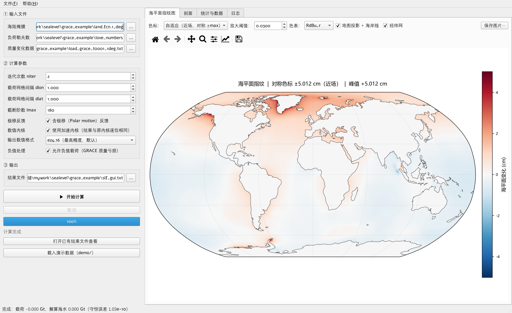
图 1 程序主界面：左侧「输入文件 / 计算参数 / 输出」，右侧四个页签（海平面指纹图 / 剖面 / 统计与数据 / 日志），底部状态栏
| 0 三十秒上手 | 1 安装与启动 | 2 这个程序算什么 |
| 3 界面总览 | 4 输入数据 | 5 操作流程 |
| 6 参数含义 | 7 结果怎么看 | 8 结果可靠性 |
| 9 常见问题 | 10 引用与致谢 | 11 作者与联系方式 |
niter 保持 2；载荷网格间隔
dlon/dlat 按数据填（演示数据是 1）；截断阶数 lmax
保持默认 180；「含极移反馈」保持勾选；演示数据（全球 1° 网格、64800 个格点）在普通笔记本上约十几秒算完。
C:\Program Files 下的程序目录）；装好后桌面会出现程序快捷方式，开始菜单里也有，双击即可运行。
如果你拿到的是压缩包而不是安装程序，把它解压到任意目录（路径里尽量不要有空格）， 双击目录里的程序图标或启动用的批处理文件即可，无需安装。
| 项目 | 要求 / 说明 |
|---|---|
| 操作系统 | Windows 10 / 11（64 位） |
| 内存 | 建议 8 GB 以上。全球 1° 载荷（6.5 万格点）占用很小；
把截断阶数 lmax 调得较大时，勒让德函数预计算会明显吃内存 |
| 磁盘占用 | 约 300–500 MB（含运行库、示例数据与说明书） |
| 权限 | 装到 Program Files 需要管理员确认；装到用户目录则不需要 |
| 卸载 | 「设置 → 应用」里找到本程序，或用开始菜单里的卸载项，按向导走完即可 |
本程序没有商业代码签名证书，程序文件是「未签名」的。新装的 Windows 11 上， 系统安全功能可能因此把它拦下来。两种提示、两种处理方式：
| 看到的提示 | 怎么办 |
|---|---|
| 「Windows 已保护你的电脑」 |
点「更多信息」→「仍要运行」即可。这是 SmartScreen 的例行提醒， 只针对这一次运行，不影响程序功能。 |
| 「智能应用控制已阻止可能不安全的应用」 |
这是 Windows 11 的智能应用控制（Smart App Control）。 它没有「放行单个程序」的白名单，「仍要运行」这类按钮也不起作用， 只能把这项功能关掉——步骤见下面的红框。 |
陆地水（冰盖、冰川、地下水、水库、土壤水……）在地表重新分配时，海水并不会"均匀地" 升降：质量增加的地方引力变强，会把附近的海水吸过去，同时海底被压得下沉。 两者叠加的结果就是海平面指纹（sea level fingerprint）——一种"近处与远处反号" 的空间图案：质量亏损（冰盖融化、地下水超采）时近处海面反而下降、远处上升； 质量增加时正好反过来。
程序求解下面的海平面方程：
S(θ, ψ, t) = C(θ, ψ, t) · [ G^L(θ, ψ, t) − R^L(θ, ψ, t) ] + c(t) C : 海洋函数（海洋 = 1，陆地 = 0） G^L : 负荷引起的大地水准面异常 R^L : 固体地球表面的径向位移 c(t): 维持海水质量守恒的 0 阶常数项（迭代中逐步修正）
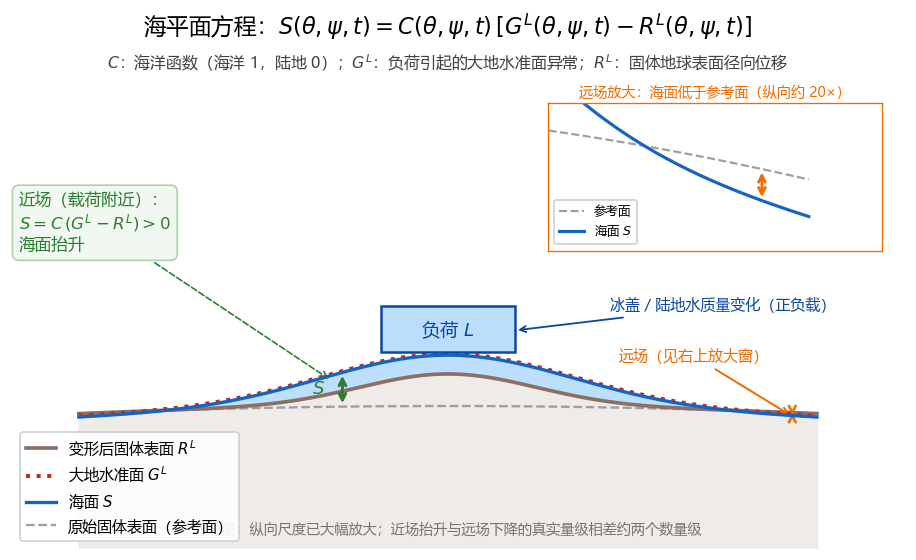
图 2 海平面方程各物理量的含义：负荷把海面"吸"起来、把固体地球压下去， 二者之差决定海面高度。远场的变化量只有近场的百分之一量级，主图上看不出来， 因此右上角单独给了一个放大窗
输入是地表质量变化的网格（例如 GRACE 反演得到的陆地水储量变化）， 输出是全球海平面变化网格。下图是一个合成算例：北极附近一块 5°×5° 的方形 正载荷，相当于 65.6 Gt 的质量增加（虚线框是载荷范围）。结果是 载荷附近海面抬升、全球远场海面普遍下降 —— 近场与远场符号相反，这就是指纹效应。
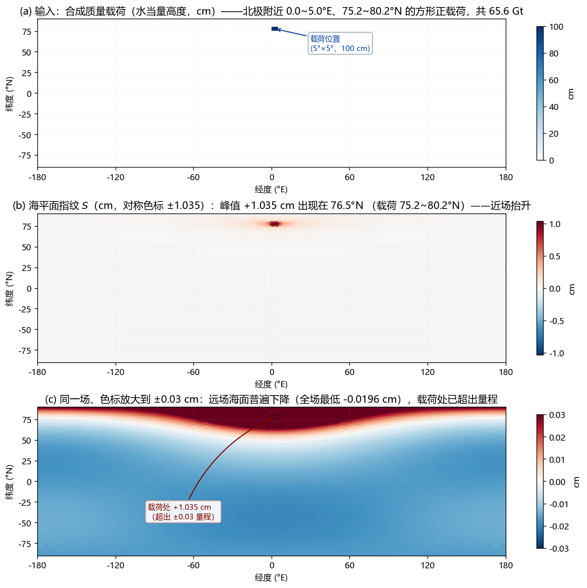
图 3 合成算例（经度以 0° 为中心）：(a) 输入的正质量载荷，共 65.6 Gt； (b) 算出的海平面指纹，峰值 +1.035 cm 出现在载荷下方；(c) 同一场、色标放大到 ±0.03 cm， 可见远场海面普遍下降（最低 −0.0196 cm）。虚线框标出载荷范围
冰盖消融是这套方法最典型的应用场景——融水进入海洋后，冰盖附近的海面反而下降， 而 GRACE 直接测到的是重力变化，两者之间的差别正是海平面指纹造成的。这一影响的量级 与处理方法，中文文献可参考王林松等（2018），即 第 10 节的文献 [1]。
窗口分四块：
| 区域 | 内容 |
|---|---|
| 左：输入文件 | 海陆掩膜、负荷勒夫数、质量变化数据三个文件路径 |
| 左：计算参数 | 迭代次数、载荷网格间隔、截断阶数、极移反馈开关、数值内核、输出格式、负值处理 |
| 左：输出 | 结果文件路径，以及开始 / 取消按钮、进度条 |
| 右：页签 | 海平面指纹图 / 剖面 / 统计与数据 / 日志 |
| 底：状态栏 | 当前状态，算完后显示载荷质量、解算海水质量与守恒误差 |
下面三张是左侧三个功能区按原始像素抓的特写（整窗缩到本页宽度后小字会变小，所以每个 功能区单独给一张）。
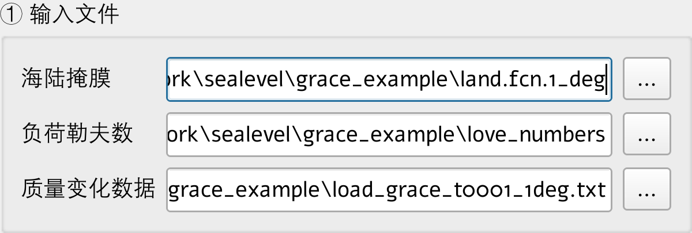
图 4 「① 输入文件」：三份必需文件。路径框右侧「…」是浏览按钮
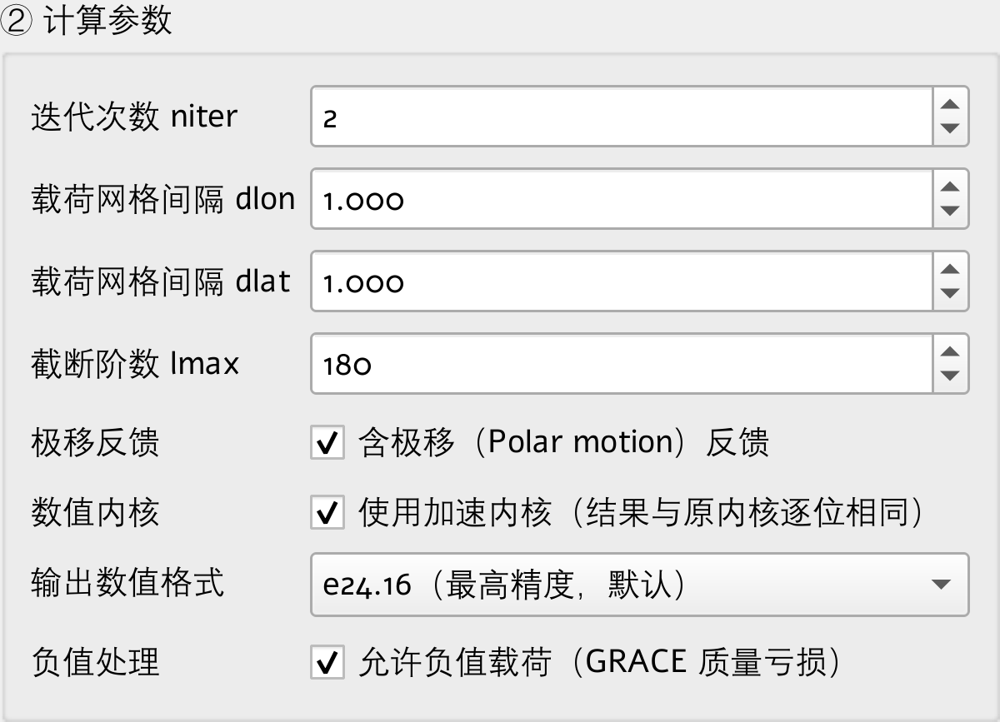
图 5 「② 计算参数」：各参数含义见 第 6 节。鼠标悬停在每一项上都会弹出说明
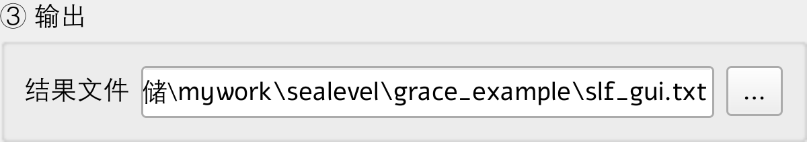
图 6 「③ 输出」与运行控制
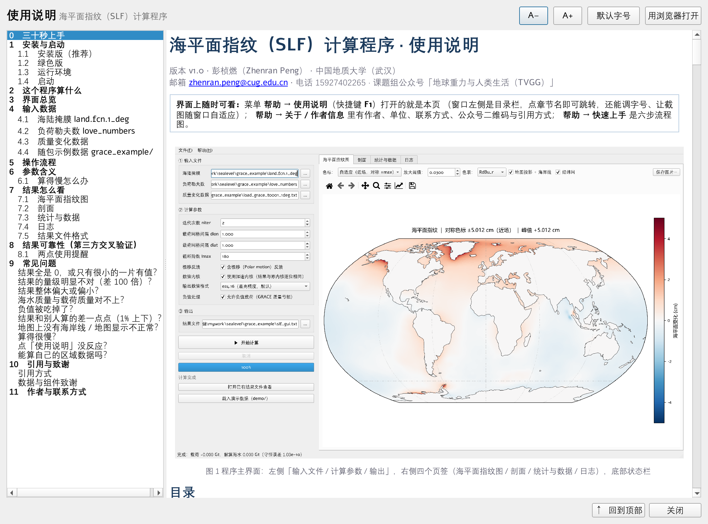
图 7 「帮助 → 使用说明」（快捷键 F1）直接在程序窗口内打开本说明书： 左侧是可跳转的目录（二级加粗、三级缩进），右上角可调正文字号 （A+ / A− / 默认字号），正文里的截图会随窗口宽度自动缩放； 需要最完整的排版时点「用浏览器打开」
程序需要三份文件，都是纯文本三列，用记事本就能打开查看。
land.fcn.1_deg每行「经度 纬度 值」，值 = 1 表示陆地、0 表示海洋。
行数必须等于 纬度格点数 × 经度格点数（默认 180 × 360 = 64800 行），
按纬度带顺序排列。
0.5 89.5 1 1.5 89.5 0 2.5 89.5 0 ...
love_numbers前 2 行是表头（会被跳过），其后每行「阶数 l h_l k_l 保留列」。
阶数至少要覆盖到设定的截断阶数 lmax，即行数不少于 lmax + 1；
不够时程序会警告，并把缺失的高阶按 0 处理（结果会失真）。
# 负荷勒夫数：h、k 列
# 列：l h_l k_l (保留列)
0 0.00000000e+00 0.00000000e+00 0.00000000e+00
1 -1.23456789e-01 0.00000000e+00 0.00000000e+00
...
每行「经度 纬度 水当量高度(m)」，单位是米，行序不限。
lwe_thickness）
单位是 厘米，喂给本程序之前必须 除以 100 换算成米，否则结果会偏大 100 倍。
另外，载荷网格间隔必须与数据一致：在界面上把 dlon / dlat
填成数据的实际间隔（1° 数据填 1，0.5° 数据填 0.5）。填错会让每个格点的面积算错，
结果整体偏大或偏小。
GRACE 的质量异常有正有负（质量亏损就是负值），所以「② 计算参数」里的 「允许负值载荷」必须勾选。
grace_example/| 文件 | 内容 |
|---|---|
land.fcn.1_deg | 1° 海陆掩膜（Natural Earth 110m 陆地多边形栅格化） |
love_numbers | PREM 弹性地球的负荷勒夫数 h、k（0–180 阶） |
load_grace_t0001_1deg.txt | CSR GRACE/GRACE-FO RL06.3 mascon 单历元质量异常 |
load_grace_trend_1deg.txt | 同一数据 5 个历元的线性趋势 |
dlon / dlat 按数据网格间隔改对。| 参数 | 默认 | 说明 |
|---|---|---|
| 迭代次数 niter | 2 | 求解海平面方程的自吸引 / 负荷反馈迭代次数。填 0 表示不做迭代， 直接把融水均匀铺在一层海面上（用于和"均匀海面"假设对照）。 默认 2 够看形态，但与完全收敛解相差约 1%（真实 GRACE 算例）； 做趋势、区域平均等定量分析时建议设到 10 以上，见 第 8 节 |
| 载荷网格经度间隔 dlon | 0.5 | 必须与数据实际网格一致（1° 数据填 1）。填错会让格点面积算错 |
| 载荷网格纬度间隔 dlat | 0.5 | 同上 |
| 截断阶数 lmax | 180 | 球谐展开的最高阶数。默认 180，与 1° 网格的分辨能力相匹配。 调大需要勒夫数表有相应的高阶；调小可用于低频分析或与低阶模型对照 |
| 极移反馈 | 勾选 | 「含极移（Polar motion）反馈」。勾选时按 Kendall et al. (2005) 计入自转轴漂移 引起的离心位扰动，与修正版 Fortran、gravity-toolkit 一致；取消勾选即求解 不含该反馈的经典海平面方程（该项改用普通系数），可用于敏感性分析。 该反馈只作用于球谐 (l, m) = (2, 1)，对结果的影响约在场峰值的 0.4 % 量级 （实测开/关差场的 (2,1) 功率占比 99.9999 %） |
| 数值内核 | 勾选 | 勾选「使用加速内核」后，计算速度约快 10 倍，结果与原内核完全一致。 取消勾选可切回原内核做对照 |
| 输出数值格式 | e24.16 | 结果文件的有效数字位数。默认最高精度，便于后续做趋势与误差分析；
选 e12.4 可得到与经典实现相同的定点输出格式，
便于与已有结果文件逐行对照 |
| 负值处理 | 勾选 | 「允许负值载荷」。用 GRACE 数据时必须勾选（质量亏损是负值）。 取消勾选会把负值清零，只有在与不处理负值的旧版结果对照时才需要 |
lmax 越大越慢（大致按平方增长），不需要高阶时把它调小；lmax 还会同时减小内存占用。算完自动切到这一页（见图 1）。顶部工具条可以调色标方式、上限阈值、 色表，并开关地图投影、海岸线、经纬网。颜色条单位是 cm。 图上方是缩放 / 平移 / 取点工具条，鼠标移到图面上也能读出具体数值。
可选择沿经线（固定经度，横轴纬度）或沿纬线（固定纬度，横轴经度）， 并挑选具体位置。「标出均匀海面（eustatic）参考线」用于对比"如果海水均匀分布"的情形。
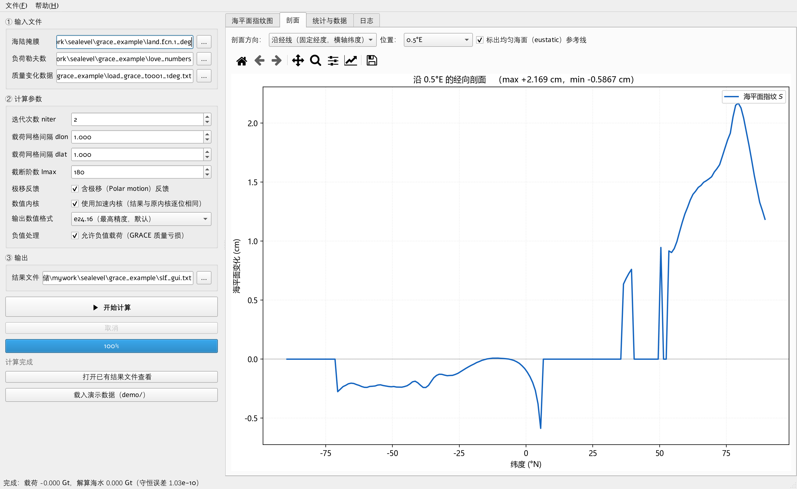
图 8 「剖面」页签：沿 0.5°E 的经向剖面。陆地格点不参与海平面方程， 在曲线上表现为 0 值平台；曲线的竖直跳变就是海岸线位置
上半部分是质量守恒自检：海水质量变化应当与陆地载荷变化大小相等、符号相反。
「质量守恒相对误差」通常在 1e-10 量级，看到这个数就说明求解是收敛的。
下半部分是结果文件前 100 行的预览。
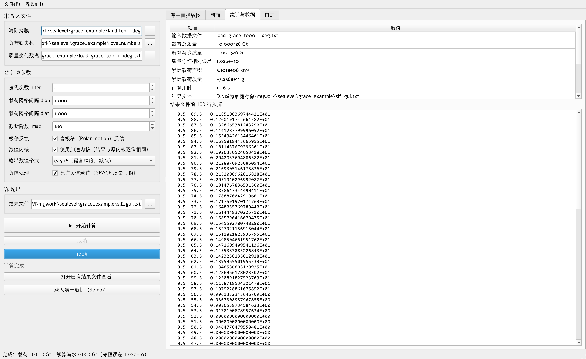
图 9 「统计与数据」页签：质量守恒自检 + 结果文件预览
完整的运行日志：读了哪些文件、算了多久、载荷总质量与解算海水质量各是多少。 出问题时把这一页的内容复制出来，便于定位。
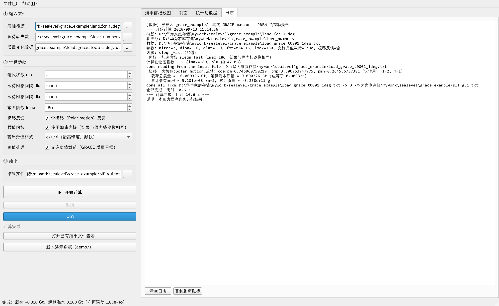
图 10 「日志」页签
每行「经度 纬度 海平面变化(cm)」，经度为外层循环、纬度为内层循环， 共 360 × 180 = 64800 行，可直接被 MATLAB / Python / Surfer 等读取：
0.5 89.5 0.1185108369744421E+01 0.5 88.5 0.1260191742664582E+01 ...
本程序的数值内核做过独立交叉验证：把 sleqn 自己算出的载荷球谐系数原样取出， 分别喂给两套完全独立的第三方实现，再另与一个解析闭式解对照。这样两边用的输入逐位相同， 差异只可能来自求解器本身。
| 对照对象 | 算例 | 全场最大偏差（占峰值） | 相关系数 |
|---|---|---|---|
| 解析闭式解（全球皆海洋，球谐域逐阶对角化） | 合成算例 | 0.029 % | 0.99999997 |
| gravity-toolkit（独立实现） | 合成算例 | 0.030 % | 0.99999997 |
| gravity-toolkit（独立实现） | 真实 GRACE + 真实海陆掩膜 | 0.022 % | 0.99999999 |
| pyslfp 2.0.6（另一套独立实现） | 全球海洋 + 光滑载荷 | 0.537 % | 0.99999919 |
前两行那两个"参考"彼此只差 0.0045 %，说明它们确实是互相独立的正确实现； 本程序与它们相差 0.03 %，来自 1° 网格上求积算符的固有混叠（属中点求积的性质， 不是算法错误）。与 pyslfp 的 0.54 % 则主要来自两边用的负荷勒夫数表不同 （pyslfp 自带 PREM_4096，本程序用 Wang et al. 2012 PREM）与地球半径取值差异 （6368 km vs 6371 km）——两套勒夫数的逐阶响应因子本身平均就差 0.19 %。
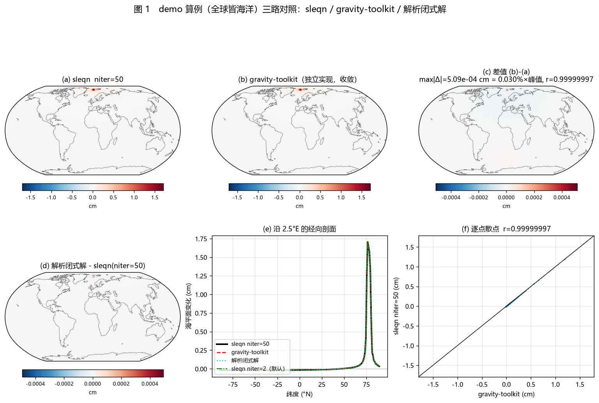
图 11 三路对照：本程序（左上）与 gravity-toolkit 独立实现（中上）算出的 海平面指纹几乎重合，差值（右上）只有峰值的 0.03 %；下排是经向剖面与逐点散点
niter=2 与完全收敛解相差约 1%
（真实 GRACE 算例，占峰值）；做趋势、区域平均这类定量分析时建议把迭代次数设到
10 以上（niter=10 时降到 0.006%）。界面上默认是 2，够看形态，
不够抠量级。
--dlon 0.5 --dlat 0.5，
并且会把负的载荷清零（这是 Fortran 版程序的既有行为）。真实 GRACE 数据是 1° 网格、
约七成格点为负，照默认跑出来的场与正确结果相关系数只有 0.96、偏差达峰值的 90 %。
请写成：--dlon 1 --dlat 1 --allow-negative。
程序现在会在网格间隔与数据不符、或发生负值清零时打印醒目警告。POLAR=True）一致，做定量分析请保持勾选。
取消勾选会得到"不含极移反馈"的经典海平面方程解，两者只差球谐 (2, 1) 一项，
影响约在场峰值的 0.4 % 量级；命令行对应 --no-polar。
它把"海水重新分布 → 地球自转轴漂移 → 离心位变化"这条反馈链算进去，
而不是像 niter 那样影响迭代收敛程度。
lmax 设得过小（例如个位数），细节会被截断掉。多半是单位问题：GRACE mascon 原始产品的等效水高是 厘米，本程序要求 米，需要先除以 100。
检查 dlon / dlat 是否与数据实际网格间隔一致。
先看「统计与数据」页签里的「质量守恒相对误差」。若误差很大，通常是：数据里存在 很大的均匀分量（建议先扣除全球面积加权均值），或者载荷网格间隔填错。
确认「允许负值载荷」已勾选。未勾选时程序会把负的载荷清零，GRACE 数据不适用。 命令行运行时如果发生清零，程序会打印警告并给出被清零的格点数与质量。
先看迭代次数。默认 niter=2 与完全收敛解相差约 1%，把它调到
10 以上再比。若仍差百分之几，通常是负荷勒夫数表不同
（不同文献的 PREM 表逐阶可差 0.2%~0.4%）或地球半径取值不同，属正常范围；
与独立实现的定量对比见 第 8 节。
海岸线与投影由 cartopy 提供，安装版已内置；绿色版若缺少该组件，取消勾选 「地图投影 / 海岸线」即可用等经纬网格正常显示。
见 6.1：确认勾选了加速内核，并按需减小 lmax 或载荷格点数。
说明书是安装目录下 docs/使用说明.html，用系统默认浏览器打开。
若该文件缺失，说明安装包不完整，请重新安装。
可以。把该区域的质量变化按「经度 纬度 水当量高度(m)」三列写成文本即可； 区域外的格点不要写进去（写了 0 也可以）。注意掩膜与数据必须是同一套经纬网格。
这是 Windows 11 的智能应用控制拦住了未签名的程序，处理步骤见 1.5 节（关掉该功能后重新双击即可，不必重装）。 把程序换到别的盘或目录安装没有用。
No such file or directory: 'C:\Program'？这是 v1.0.0 的一个缺陷：控制文件里两个文件名原本按空白切分，程序装在
C:\Program Files\… 下时，路径会被空格拦腰截断（
C:\Program Files\海平面指纹\… → C:\Program），于是报找不到文件。
v1.0.1 已修复（改用带引号的控制文件，含空格的路径照常可用），请换用
v1.0.1 及以后的安装包。
如果暂时只能用 v1.0.0，把程序和示例数据放在不含空格的路径下（例如
D:\sleqn\）即可绕过；命令行用法下也可以把 Filelist.txt 里的路径
写成双引号括起来的形式。
本程序实现并求解海平面方程，方法出自：
[1] 王林松, 陈超, 马险, 杜劲松. 冰盖消融的海平面指纹变化及其对 GRACE 监测结果的影响[J].
地球物理学报, 2018, 61(7): 2679–2690.
https://doi.org/10.6038/cjg2018L0335
[2] Sun J. W., Wang L. S., Peng Z. R., Fu Z. Y., Chen C (2022).
The sea level fingerprints of global terrestrial water storage changes detected by
GRACE and GRACE-FO data. Pure and Applied Geophysics, 179(9), 3303–3317.
https://doi.org/10.1007/s00024-022-03099-5
在论文或报告中使用了本程序的计算结果，请引用上述文献。
| 作者 | 彭桢燃（Zhenran Peng） |
|---|---|
| 单位 | 中国地质大学（武汉） |
| 邮箱 | zhenran.peng@cug.edu.cn |
| 电话 | 15927402265 |
| 公众号 | 地球重力与人类生活（TVGG） |
使用中遇到问题、发现异常结果，或希望增加新功能，欢迎通过上面的邮箱或公众号留言反馈； 反馈时请附上「日志」页签的内容与所用的数据格式说明，便于快速定位。
图 12 课题组公众号「地球重力与人类生活（TVGG）」，微信扫一扫即可关注